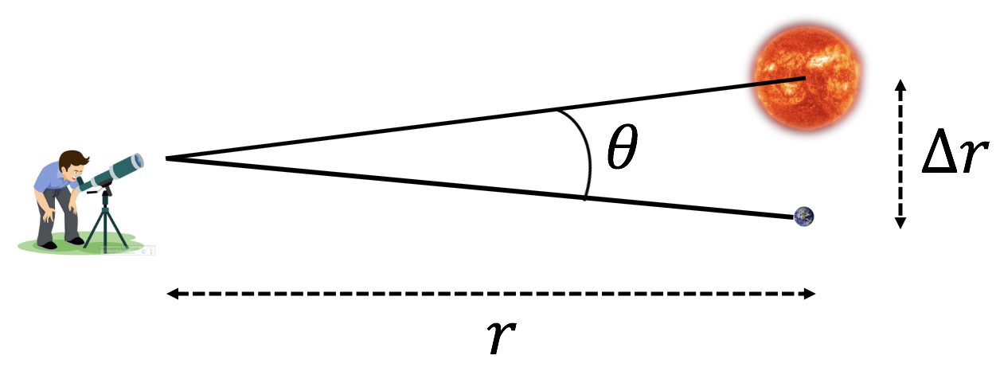

Hvis θ er veldig liten, så har trekanten tilnærmet 90∘ på begge de gjenværende vinklene. Da kan vi anta at en av dem er nøyaktig 90∘ og at vi dermed har en rettvinkelt trekant. Hvis θ er liten kan vi også anta at begge de andre sidene har lengden r. Da har vi: Δr = rsin θ ≈ rθ fordi rekkeutviklingen i θ er $\sin{\theta}\approx \theta - \frac{1}{6}\theta^3+O(\theta^5)$. Til første orden blir det kun θ.

En annen måte å tenke på er den samme vi brukte for å finne tangensialhastighet i 1B. Buen Δs og avstanden Δr blir omtrent den samme når denne avstanden er veldig liten (en bitteliten del av av bue blir omtrent som en rett lite linjestykke): Δr ≈ Δs = rθ Hvis du ikke husker resonnementet fra 1B, ta gjerne en titt på denne videoen
igjen. Neste side